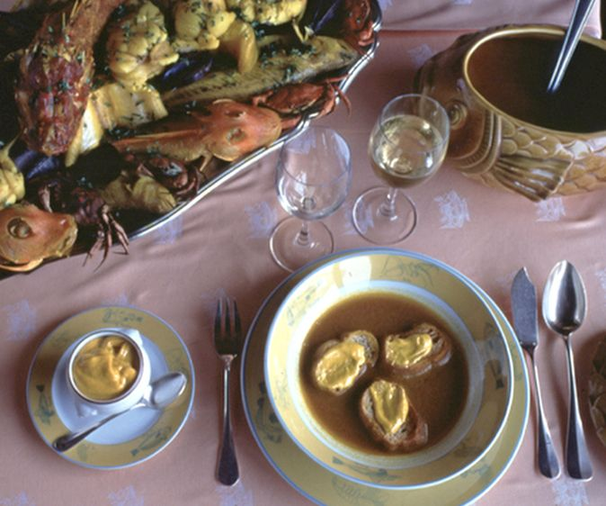

Bonjour!
L34 React · lecture 9 · track 8 of 10 · syllabus L36
La chambre
froide
The cold room is where the kitchen keeps what it fetched from the market. Every box has a label and a date. Before a cook walks to the market again, they read the label: fresh enough? Use it. Too old? Fetch again, and keep serving from the shelf until the delivery arrives.
- Theme
- TanStack Query: reading data
- Le Bistro today
- One cache for the menu, the profile, the queue
- Your project
- v0.8 · a cache for the API
- Length
- 2 hours · one break
Le Bistro · L34 · 120 minutes
Today's menu
- AccueilHello where Le Bistro is today3′
- ApéritifQuestions and two homework demos8′
- EntréeProblem 1 the menu, loaded three times5′
- PlatA cache for the server's data useQuery, keys, fresh and stale24′
- AtelierClasswork 1 your product list in a cache15′
- Pause caféBreak music on, screens off10′
- Second platProblem 2 and a cache that behaves blank screens, old queues, retries27′
- AtelierClasswork 2 with AI prompt it, then check it15′
- MasterclassOne prompt, the whole Le Bistro CRAFT, then the short version8′
- DessertWrap-up recap, homework, what comes next5′
Route The second five lectures
Le Bistro, lecture by lecture
DoneL27 componentsL28 stateL29 effectsL30 routingL31 contextL32 storesL33 forms

L32 · done
Stores
Zustand. One cart and one session, outside React.

L33 · done
Forms
React Hook Form and Zod. A sign-up and a table slip.

L34 · today
Cache
TanStack Query. The menu is fetched once.

L35
Changes
Mutations, optimistic updates, endless lists.

L36
UI
Accessible dialogs and shadcn/ui.
Today's goal Press next to unveil it
The same menu, and forty lines fewer
Under the blind: how MenuPage fetches its dishes now. Red goes, green comes.
- The
useApihook is deleted - Home, Menu and a dish share one request
- Back to the menu: the dishes are already there
- Hover a category: its request starts before the click
Apéritif Before we start
Questions from last time?
React Hook Form, Zod, steps and lists.
Why does register cause no renders while typing?
The browser keeps the text in the input. The form reads it when the guest presses Send. With useState every letter is a state change and a render.
What does handleSubmit(onSubmit) do?
It is the gate: it asks the schema first. onSubmit gets typed values only when they are valid; otherwise the messages appear next to the fields.
Why does "Back" lose data in a three-step form?
Each step kept its own state, and a component's state dies when it leaves the screen. One form above the steps keeps the values, whoever is on screen.
Homework check Two volunteers, two minutes each
Show us your v0.7
Open the sign-up and type in a field with Highlight updates on: nothing flashes. Then open the Network tab, go Home → Menu → a product, and count the requests for the same list.
Look for
- No
useStateholds a field's value - Every message comes from a schema
useFormis typed withz.infer- The repeated-password message sits under its field
- The live Vercel link works
Entrée · Problem 1 Before the new tool
Three pages.
One menu.
Three requests.
Open the home page, then the menu, then a dish. How many times did the browser ask the server for the same dishes?

Problem 1 Click through the site, or press the button
Home, Menu, a dish: count the requests
On the real app: 4.
Home, Menu, a dish and Back to the menu: four requests for the same list (measured on the production build). With a cache: one.
Every page asks
A page does not know that another page already has the answer.
Every page waits
The skeleton shows again on each page, even for data we had a second ago.
Nothing is remembered
The answer lives in the component's state, and dies with the component.
Problem 1 The hook from L29, read as a reviewer
What useApi does, and what it cannot
- One answer, kept in this componentThe key and the state belong to this call of the hook.
- A request on every mountHome, Menu and the dish page each start their own.
- Old requests are cancelledGood: this is the race fix from L29.
- …and everything is forgottenWhen the page goes, the state goes. Nobody else could ever read it.
Problem 1 Your turn
What would we need?
Solution 1 The cold room
Ask the cache, not the server
A cache outside the tree
The QueryClient is a map from a key to an answer. It lives in a module, not in a component.
A page asks by key
"Give me the answer for ["dishes","list","all"], and here is how to fetch it if you do not have it."
The cache decides
Missing or too old: it calls queryFn. Otherwise it answers at once, with no request.
Everybody shares it
Home, Menu and the dish page read one entry. Two pages that ask at the same moment share one request.
Solution 1 What you give, what you get
Two things in, a few flags out
queryKey
The address of the data in the cache. Same key, same entry. It works like a dependency array: change a value in it and you ask a new question.
queryFn
How to fetch it, as a function that returns a promise. Called only when the cache has no fresh answer. If it throws, the query is in error.
data · isPending · isError
The three states of a screen: nothing yet, something wrong, or the answer. data is undefined until it arrives.
isFetching
A request is running right now, for the first time or in the background. The old data stays on screen meanwhile.
Solution 1 · Recipe Type it with me, step by step
One cache, one provider
- Install itThe library, and its inspector for development.npm install
- Make the cache onceIn its own module, never inside a component: a component would make a new, empty cache on every render.src/lib/queryClient.ts
- Give it to the treeOne provider around the app. The cart and the session stay in their stores.src/main.tsx
- Add the inspectorThe DevTools: a panel on the page. It is left out of the production build.
Solution 1 · Recipe Replace every useApi
One file for the questions
- A key and a function, together
queryOptionskeeps them in one object, so every page asks the same question the same way.src/queries/dishes.ts - Ask from any pageHome, Menu and the dish page all use the same entry:
"all". - Delete the hookThe best part. Follow TypeScript's red lines until nothing imports it.
Solution 1 Mount a component, unmount it, fast-forward the clock
A label and a date on every entry
Age of the answer staleTime = 10 s
Time with nobody using it gcTime = 30 s
Fresh · the first 10 s
A component that mounts gets the answer at once. No request.
Stale · after 10 s
It gets the answer at once, and a refresh runs in the background.
Gone · 30 s with no user
The entry is removed. The next component starts from a skeleton.
Solution 1 Click a category, then try the key that forgets it
The key is the address
Same key, same entry
Two components with the same key share one answer and one request.
A new value, a new key
Change the category and you ask a new question, with its own entry.
A dependency array
Put in the key everything the function uses, as you do for useEffect.
Fresh 3 · Inactive 3how many answers are in each state
one row per keythe address of each answer
disabledenabled: false
Solution 1 Open it, always
A window into the cold room
The counters
Fresh, fetching, paused, stale, inactive: every entry is in exactly one of them.
The keys
Click a row to see the data, the age, and buttons to refetch or invalidate it.
The number on the left
1: a component uses this entry. 0: inactive, waiting for gcTime.
disabled
The entry exists but is not asked for: enabled: false. Here: no search text.
Solution 1 The four mistakes you will see today
When a cache goes wrong
A variable missing from the key
The cache made inside a component
queryClient in its own module, imported by main.tsxThe old way of calling it (Query v4)
gcTime · no callbacks: use the dataNo provider around the app
Quick check Vote, then click
Which queryKey will show the wrong data?
C: the function uses category, but the key does not mention it, so every category shares one entry. The key must contain everything the function uses, like the dependency array of an effect. A, B and D do.
Atelier · Classwork 1 15 minutes, on your own project
Your products, in a cache
useQuery for the list
npm install @tanstack/react-query @tanstack/react-query-devtools; aqueryClientin its own module and the provider inmain.tsx.queries/products.tswithqueryOptions(key and function together).- The list page and the product page use
useQuery. Delete your fetch hook.
Categories and search
- Categories in the key (
["products","list",category]) andplaceholderData: keepPreviousData. - A search that waits for its text:
enabled.
One product, from the list
- The product page reads
GET /products/{id}and starts from the list's data (initialDatafrom the cache).
Done when
- Network tab: list → product → back is one request for the list
- No fetch hook and no
useEffectthat fetches is left - Every variable the function uses is in its key
- The DevTools show your keys
Stuck?
export const productQueries = {
list: (category: string) =>
queryOptions({
queryKey: ["products", "list", category],
queryFn: () => fetchJson<ProductList>(
category === "all"
? `${BASE}/products?limit=30`
: `${BASE}/products/category/${category}`,
),
}),
};Pause café 10 minutes
Pause café
Stand up, refill, rest your eyes. After the break: three seconds of nothing, a queue that gets old, and a guest who leaves.
Second plat · Problem 2 We have a cache now
Three seconds
of nothing.
Click "Main Courses". The kitchen needs three seconds. What does the guest see while they wait, and what does the kitchen's screen show all evening?
Problem 2 Click "Main Courses", then "Drinks", then back
Click a category, wait
The first visit is blank
Nothing is in the cache yet, so the guest sees a skeleton for the whole wait.
The second visit is instant
The cache remembers: a category we have seen costs nothing.
Three seconds is long
The main courses take three seconds on the real API. A guest may leave.
Problem 2 The kitchen opens its screen. The evening goes on.
The queue is as old as the page
The copy is as old as the page
Nothing asks the server again. The age only grows.
The server moves on
A new order arrives every few seconds. The page does not know.
Only F5 helps
And the kitchen's screen should not need a guest to press F5.
Problem 2 Your turn
What would we need now?
Second plat · Recipe Never show a blank page when you have something
placeholderData and enabled
- Keep the old dishes while the new ones load
placeholderData: keepPreviousData: the last answer stands in until the new key has data.src/pages/MenuPage.tsx - Tell the guest they are old
isPlaceholderDatais true while the stand-in shows: dim the grid, and mark itaria-busy. - A query that waits for its turn
enabled: falseasks nothing: no menu request while a search is showing, and no search without text.
Second plat · Recipe Start the kitchen before the guest orders
Start loading before the click
- Get the cache in a component
useQueryClient()returns the client from the provider. - Prefetch when the pointer arrives
prefetchQueryfills the cache for a key without a component. If the entry is fresh, it does nothing.MenuPage.tsx - The chips report itMouse and keyboard:
onMouseEnterandonFocus. By the click the dishes are often there.CategoryChips.tsx
Solution 2 Switch the two settings on, one by one, and click the categories again
Two settings, no blank screen
Second plat · Recipe The kitchen's queue
Refresh what changes on its own
- A key for the queueEvery key about orders starts with
"orders". The function adds the staff token.src/queries/kitchen.ts - Never trust an old queue
staleTime: 0overrides the minute we gave everything else. - Ask again every five seconds
refetchIntervalwhile the page is open. It also refetches when the guest comes back to the tab. - Show the refresh, keep the list
isPending: nothing yet.isFetching: a refresh is running, the old queue stays visible.KitchenPage.tsx
Solution 2 Switch the settings on and watch the counter on the right
The queue refreshes itself
refetchInterval
Ask again every five seconds while the page is open.
refetchOnWindowFocus
Ask again when the guest comes back to the tab (on by default for stale data).
isFetching, not isPending
Show "Updating…" and keep the list. Never hide the data for a refresh.
Solution 2 Press a failure and watch the attempts
Retry what can recover, not what cannot
A 5xx may recover
A server hiccup or a lost connection: try again, after 1 s, then 2 s.
A 4xx never will
404 does not exist, 429 means too many requests: asking again makes it worse.
Two retries are enough
The default is three, after 1, 2 and 4 seconds: seven seconds before the guest sees the error.
Solution 2 Maia signs in, signs out, Beso signs in: whose profile is on screen?
Data that belongs to a guest
A cache does not know who is looking
Whatever is fresh is served, to whoever asks.
Put the guest in the key
Maia and Beso get two entries: nobody sees the other's data.
Clear it when the guest leaves
On sign-out the cache is emptied: nothing of Maia's stays in the browser.
Solution 2 Le Bistro, version 0.8
What the cache bought us
useApi| State | Home |
|---|---|
| Menu, categories, search results | TanStack Query (was useApi) |
| The profile, the kitchen's queue | TanStack Query: the guest in the key, polling |
| The cart, the session | stores, saved |
| The forms | React Hook Form and Zod |
| Category, search text | the URL |
Solution 2 The four mistakes of the second half
When the cold room is run badly
A copy of the data in state
data directly, and derive what you need from itA skeleton on isPending for a disabled query
isLoading, or isFetching && !data, or render it only while enabledThinking "stale" means broken
staleTime it deserves: a minute for the menu, 0 for a queueA guest's data with no guest in the key
queryClient.clear() on sign-outQuick check Vote, then click
What does staleTime: 60_000 mean?
B: for sixty seconds after it arrives, the answer is fresh: a new component, or a return to the tab, gets it from the cache without a request. After that it is stale: shown at once, and refetched when someone looks. A is gcTime (and it counts unused time). C is refetchInterval.
Atelier · Classwork 2 · with AI 15 minutes, on your own project
Prompt it: a cache with settings
- BaseYour product list and product page on
useQuerywithqueryOptions, aqueryClientmodule and the provider. No fetch hook left. - Plus
keepPreviousDataon a category change,enabledfor the search, and a prefetch on hover and focus. - ProA guest's data (
/auth/me) with the guest in the key and a cache cleared on sign-out.
Your prompt, in five parts (CRAFT)
ContextYour shop and stack, with versions: @tanstack/react-query 5. Paste your fetch hook and your list page.
Role"A React teacher who writes small TanStack Query code for a beginner."
ActionThe Base task. Plus and Pro in follow-up prompts.
Format"Only the files that change, complete, with paths. Query v5: one options object."
Target"Every variable the function uses is in its key. No useEffect fetching, no state copy."
Done when
- Every key lists what its function uses
- No
useEffectfetches and nouseStatecopies the data - Query v5 syntax: one options object,
gcTime,placeholderData - AI.md: your prompt and one thing you changed
A sample prompt · Tech store
CONTEXT Shop "Volt" (phones, laptops). Vite + React 19 + TypeScript + Tailwind 4, @tanstack/react-query 5. DummyJSON API. Products are fetched in useProducts, a useEffect hook (pasted). ROLE A React teacher who writes small TanStack Query code. ACTION Replace useProducts with queries/products.ts (queryOptions: list by category, one product). queryClient.ts with a 1 minute staleTime. Keep the old products while a category loads; prefetch a category on hover. FORMAT Only changed files, complete, with paths. Query v5. TARGET Every variable used by a queryFn is in its key.
Masterclass · LAB-34 Press next: the prompt opens part by part
Le Bistro so far, in one prompt
Contextwhat exists and what we use
Le Bistro, a French restaurant site. Vite + React 19 + TypeScript + Tailwind CSS 4, react-router 8 (import from "react-router"), Zustand 5, react-hook-form 7, zod 4, @tanstack/react-query 5. API at /api through a Vite proxy: dishes?category= (main-courses takes 3 s), categories, search?q= (10 a minute, then 429), login (2-minute token), profile and the staff-only orders/queue.
Rolewho answers
You are a senior React developer who writes code for beginners to read.
Actionwhat to build, step by step
Build the site as it is so far (pages, role guards, cart and session in Zustand stores, the login, sign-up and table-notes forms), with ALL server data in TanStack Query v5: - lib/queryClient.ts: staleTime 1 minute; no retry on a 4xx, two retries otherwise; the cache is cleared when the session ends (store subscribe). - queries/dishes.ts, account.ts, kitchen.ts with queryOptions: every dish key starts with "dishes", the profile key holds the guest's email, the queue refetches every 5 seconds. - Menu: keepPreviousData, enabled for the search, prefetch on hover and focus of a category, "Try again", a message for a 429. Home, Menu and the dish page share one entry. No useApi.
Formatwhat the answer looks like
First a table: each piece of server data, its query key and its staleTime. Then every file in full with its path.
Targetwho reads it, when it's done
Beginners will read it: one queryClient module, keys in one place, no useState copies of query data, v5 syntax only (one options object, gcTime, placeholderData). It must pass npm run build.
Masterclass · LAB-34 The AI writes fast. You decide if it's right.
Run it, then check it
- Copy the prompt into an AI toolClaude, ChatGPT, Copilot Chat: any of them. Nothing to attach: the API is named in the prompt
- Build what it gives backa new Vite project, every file at its path, plus
npm install zustand react-hook-form zod @hookform/resolvers@5 @tanstack/react-query - Run
npm run devandnpm run buildan error message goes straight back into the chat - Compare with
code/after-L34the version we built by hand
Check it with what you learned today
- Query v5 only: one options object,
gcTime,placeholderData; nocacheTime, noonSuccess - One
queryClientin its own module; the provider is inmain.tsx; the cache is never made inside a component - Every key lists what its function uses; the profile key holds the guest
- No
useEffectfetches and nouseStatecopies query data - A 4xx is not retried; the menu has
keepPreviousDataand a prefetch
AIs love useEffect + useState around a fetch, even when you ask for TanStack Query. Today you can say why not.
Masterclass · LAB-34 The same five parts, without the labels
The short version
You're a senior React developer writing for beginners. Le Bistro is a Vite + React 19 + TypeScript + Tailwind 4 app with react-router 8, Zustand 5, react-hook-form 7, zod 4 and @tanstack/react-query 5, and an API at /api through a Vite proxy (dishes by category, where the main courses take 3 seconds; categories; a search that allows 10 requests a minute and then answers 429; a login with a 2-minute token; the profile; and the staff-only order queue). Build the site as it is so far (pages, role guards, a cart and a session in Zustand stores, the login, sign-up and table-notes forms) with all server data in TanStack Query v5: a lib/queryClient.ts (staleTime one minute, no retry on a 4xx and two retries otherwise, the cache cleared when the session ends), queries/dishes.ts, account.ts and kitchen.ts with queryOptions (every dish key starts with "dishes", the profile key holds the guest's email, the queue refetches every 5 seconds), and a menu with keepPreviousData, enabled for the search, a prefetch on hover and focus of a category, a "Try again" button and a message for a 429; Home, Menu and the dish page share one entry, and there is no useApi. Answer with a table of each piece of server data, its query key and its staleTime, then every file in full with its path. Keep it simple for beginners, with keys in one place, no useState copies of query data and v5 syntax only, and make sure npm run build passes.
How CRAFT works
The five parts are a checklist for your thinking, not a form to fill in. Once all five are there, the labels can go.
Dessert What we solved today
Two problems, two answers
Problem 1
The same menu fetched on every page, and forgotten with the page.
A cache by key
useQuery with a key that lists what the function uses. Fresh answers come from the cache, stale ones are refetched when someone looks.
Problem 2
Three seconds of nothing, a queue that gets old, a guest who leaves.
Settings, not code
keepPreviousData, prefetchQuery, refetchInterval, a retry rule, the guest in the key and a cache that is cleared.
Dessert Click a card to check yourself
What does this do?
The address of the answer. Same key, same entry; a new category is a new question.
The answer counts as fresh for a minute: no refetch on mount or on focus.
The old answer stays on screen, marked isPlaceholderData, while the new key loads.
The query waits: no request until the condition is true.
Fills the cache for a key without a component, if the entry is not fresh.
Asks again every five seconds while the page is open: for data that changes on its own.
Homework Before L35
Your shop, version 0.8
All server data in the cache
- A
queryClientmodule and the provider;queries/withqueryOptionsfor products, categories, one product and search. - Every key lists what its function uses. No fetch hook and no
useEffectthat fetches. - Home, list and product page share one request.
keepPreviousDataon a category change, andenabledfor the search.- A "Try again" button (
refetch) on an error.
Faster than the click
- Prefetch on hover and focus; a retry rule that skips a 4xx; the DevTools screenshot in the README.
A guest's data
/auth/mewith the guest in the key, and a cache cleared on sign-out. Two accounts, one browser: no leak.
Before you submit
- Network tab: list → product → back is one request
- Search for
useEffect: none fetches - The DevTools show your keys
npm run buildpasses, the Vercel link works
Full brief and grading: homework.md.
L34 La chambre froide
Merci!
Questions now, or in the class chat. See you at L35.